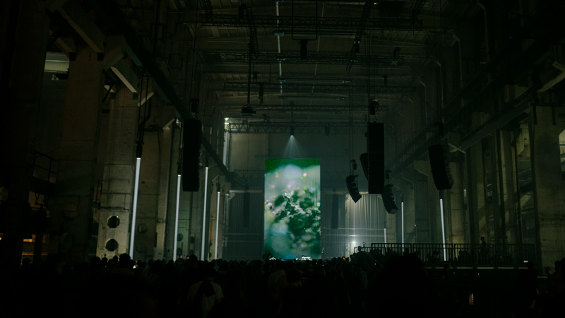

All Above - live A/V with Grand River
Music by Grand River
Live light design by Marco Ciceri
Live light design by Marco Ciceri

The All Above live show is a moving and immersive experience specifically created for the new tour. When hearing the pieces of Grand River's latest release on stage, we are immersed in an emotional experience, the vision of a sentiment, where we can witness the composer bowing to what she is dedicated and devoted to. The performance offers an enhanced listening experience compared to the album, as it features reprises that are specifically composed for the live show.




Light and visual stage design is created and performed live by Marco Ciceri, Grand River's long time collaborator. Between light and darkness, light projections, smoke and mirrors on moving engines reflecting beams of light, the show is an intangible setting for contemplation and immersion, inviting the spectator to let go.
https://youtu.be/JW5KYC9tF_4?si=qIHJMK-BlYEq6irx
UPCOMING SHOWS
PAST SHOWS
Sonica - Glasgow - UK
Nextones - Val D’Ossola - Italy
Takeover - Athens - Greece
Atonal - Berlin - Germany
Mutek - Montreal - Canada

Booking contact (Americas/Australia): Heavy Trip
Booking contact (Europe/Etc): Swamp Booking
Management Contact - Alessandro Cortini
Booking contact (Europe/Etc): Swamp Booking
Management Contact - Alessandro Cortini
Alessandro Cortini is an Italian musician, producer, composer, and instrument builder.
Cortini is one of the foremost figures of contemporary electronic music, best known for his haunting, atmospheric work. Alongside being a longstanding member of Nine Inch Nails, he is highly prolific and has released a steady stream of his own heady music on luminary labels including Mute, Hospital, and Important Records for the past decade. Throughout his shadowy rise to fame, he has collaborated with the likes of Lawrence English, Daniel Avery and Merzbow (to name a few). Balancing dark ambience with smokey, pulsing rhythms, his compositions are perfectly restrained, textured and mesmeric.
Cortini was inducted into the Rock and Roll Hall of Fame in 2020 through his work with Nine Inch Nails, making history as the only Italian musician to have ever been honored with this recognition.
In 2021, in collaboration with boutique synth builders Make Noise, Cortini released his own, custom-designed, semi-modular synth, “Strega” (Italian for ‘witch’). That same year, he used Strega to build his latest full length, Scuro Chiaro [Mute], which Pitchfork described as “pitched somewhere between purgatory and the planetarium ... consistently managing to thrill and surprise”.
In addition to years of extensive worldwide touring, Cortini has also soundtracked fashion shows including Alexander McQueen, Dior, and several of Fendi’s presentations. In 2022, he exhibited a high-concept audio installation called “Nati Infiniti” for Sonar 2022 at Museu de Lisboa’s “Fábrica de Moagem.” A live version of “Nati Infiniti” is set to debut at Berlin Atonal in 2023.
Alessandro Cortini’s music has been licensed for use in television, film and documentaries, games, and commercials, including FX’s hit show The Bear, “Thank You Very Much” a documentary about Andy Kaufman, Samsung, BMW, Sony, and Netflix. Remixes have also been a part of Cortini’s identity – remixing the likes of Depeche Mode to Mogwai to Death Cab For Cutie, Yann Tiersen to Vatican Shadow, and more between and beyond.
Marco Ciceri is a visionary Italian visual artist, based in the dynamic hub of Berlin. Renowned for his immersive live shows and groundbreaking installations, he masterfully blends light and video into breathtaking experiences. With a five-year tenure at the avant-garde collective Pfadfinderei, preceded by a pivotal role at the internationally acclaimed Marshmallow Laser Feast in London, Marco’s career trajectory is marked by exceptional collaboration and innovation. Armed with a design and arts degree from the University of Bolzano in Italy, he seamlessly integrates software-driven automation and physical mechanics into his animations, crafting intricate, fluid worlds. Marco’s work is a testament to his relentless pursuit of aesthetic perfection, where multiple mediums converge to create unparalleled visual spectacles.
2023